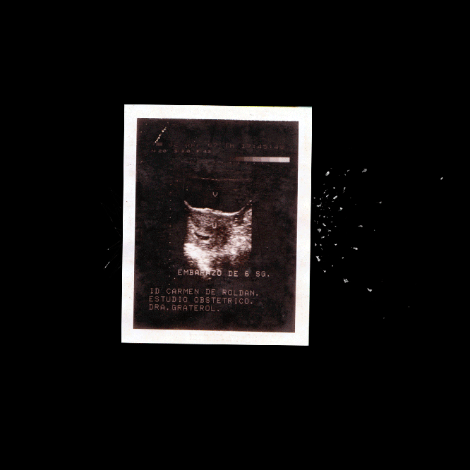
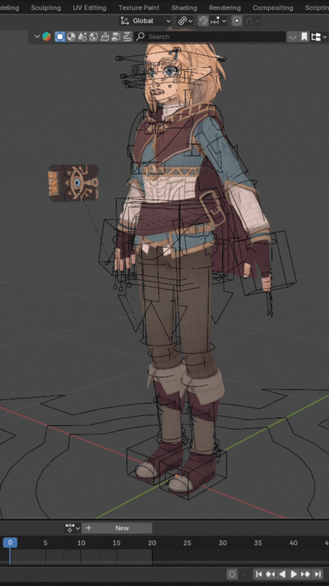
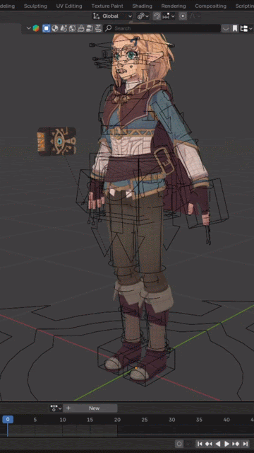
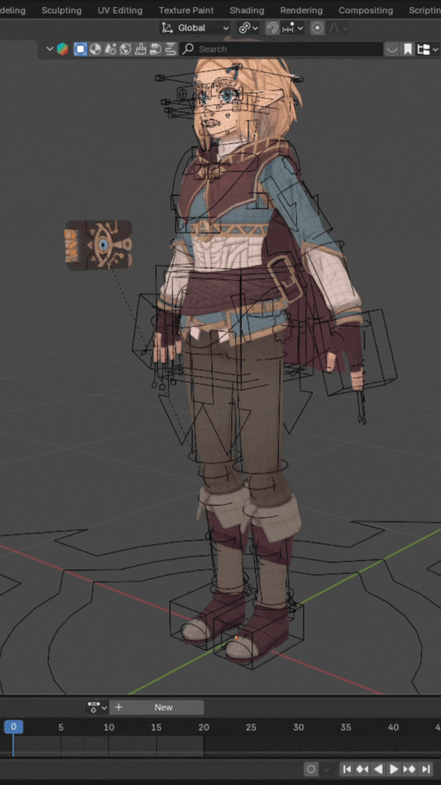
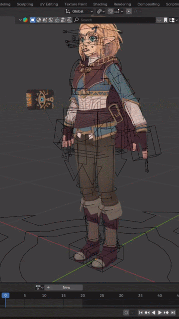
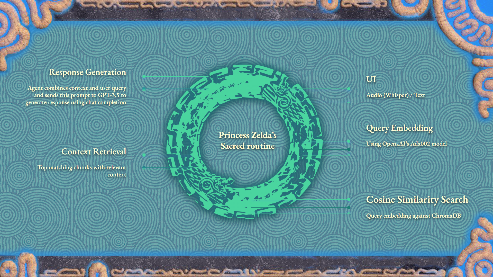

When I was offered the opportunity to create the digital presence for Olympian Power Cleaners, I saw it not just as a web design job, but as a new kind of artistic challenge: could I apply my background in creating immersive, conceptual experiences to the practical needs of a client-focused project? I accepted the challenge and ventured into my first professional UI/UX project from concept to deployment.
My journey began with translating the client's brand into a clean, intuitive, and professional user interface. However, the project quickly evolved beyond design. I found myself navigating complex technical hurdles, including a critical domain issue that required deep troubleshooting and damage controlâ€â€a true trial by fire that forced me to learn the hidden architecture of the internet on the fly. I was surprised by my own resilience and the satisfaction that came from not just designing a solution, but building and deploying it from the ground up.
In addition to the core website, I explored ways to push the user experience further. I developed a prototype for an AI-powered chatbot designed to provide instant quotes and answer customer questions, offering a glimpse into a more interactive and efficient future for the client's digital front door. While the final build utilized a classic contact form due to budget considerations, the prototype stands as a testament to the innovative possibilities I bring to every project.
Today, I continue to manage and maintain the live website. This project was a pivotal moment for meâ€â€my first paid creative commission and a profound lesson in how the principles of art, empathy, and narrative can be used to build functional, beautiful, and effective tools for the real world.

I'm not
an engineer
who learned
about
CREATIVITY
an engineer
who learned
about
CREATIVITY
I mastered
AI engineering
with the sole purpose
of finding my MEDIUM
and I did.
AI engineering
with the sole purpose
of finding my MEDIUM
and I did.

My work is a continuous self-portrait, an attempt to map the territories of the psyche and identity in an age defined by mass media. I don't create from theory; I create from lived experience. Each piece is a necessary act of processing the world, a way to materialize the constant negotiation between our inner lives and the external forces that seek to shape us. My practice is rooted in a central question: what happens to the substance of human communication when it is mediated by technology?
This inquiry has led me through performance, video, and installation, and has now naturally evolved to embrace Artificial Intelligence not as a tool, but as a conceptual medium. My transition into AI engineering was not a career change; it was the next logical step in my artistic practice. I felt the need to understand this new language from within—to deconstruct its myths and master its grammar—in order to use it authentically.In my work, I treat AI as a collaborator and a subject.
I am fascinated by its capacity to simulate "personality," which I use as a vehicle to create intimate, often unsettling dialogues with the viewer. I see these systems as a mirror, a way to stage the chaotic "social network of the self" and explore the internal conflicts that precede any external performance. Ultimately, I am not just using AI; I am interrogating it, pushing it beyond its utilitarian function to see if, in its code and its accidents, we can find a reflection of our own complex, fragile, and deeply nature.


CORE Competencies
AI & MACHINE LEARNING
Affective Computing, LLMs, Agentic AI, Retrieval-Augmented Generation (RAG), NLP, Deep Learning, TensorFlow, PyTorch, Scikit-learn.
WEB & UX/UI
Frontend Development (HTML5, CSS3, JavaScript), Responsive Design, UX/UI, Prototyping (Adobe XD), Git Version Control.
FREELANCE EXPERIENCE
Full Stack Developer, Branding Consultancy, and AI Agent Website Development. Recent projects: olympianpowercleaners.com, mastoinc.com, elprimocleaningproducts.com
SOFT SKILLS
Cross-Cultural Communication, High-Pressure Decision Making, Empathy, Adaptability, Strategic Thinking, Problem Solving.
LANGUAGES
Spanish (Native), Portuguese (Native), English (Fluent).
CREATIVE PRODUCTION
Voice-Over (Spanish/Portuguese/English), Audio Editing & Sound Design, Video Strategy, Conceptual Art project development, Creative Direction, Investigation, Video Installation, strong domain over Adobe creative tools - Photoshop, Illustrator, Lightroom, Premiere, Audition and XD.
2011 Collective Exhibition, True Tales. DV PAL 4'23''
Festival Escrita na Paisagem II Mostra de Video Performance.
Curator: Olga Moreira.
My starting point was the image of the family table. I wanted to take this traditionally sacred space for connection and nourishment and subvert it. By leaving the plates and glasses empty, I aimed to evoke a sense of spiritual and communal void, a hunger that is not being met.
Into this void, I introduced what I see as the dominant force in our culture: the relentless stream of commercial brands. My intention was to create a modern liturgy where these corporate logos become the new icons of worship. By projecting them alongside the symbol of the cross, I am directly questioning what has replaced traditional faith.
The projector is the unseen, modern-day god, and the family sits in passive reception, their faces and bodies literally branded by its light. The piece is my reflection on this cultural shift, where the family ritual is no longer about prayer and connection, but about the silent, collective consumption of the media that tells us who to be.


This insight became central to my understanding of the work. "Internercia" is not just about the visual contrast between the digital and the real; it is about the inescapable truth of the physical body that the digital world tries to obscure.
While the internet offers a sanitized, disembodied presence, the performance confronts the audience with the undeniable, biological evidence of my existenceâ€â€Âa presence that has a scent, that sweats and decays, and that is fundamentally, messily human. It is in this sensory, uncomfortable truth that the illusion of digital connection is most profoundly broken.


2015
Space Intervention, Park Theme. Outdoor Illustration
Park - Outdoor Lounge, JW Marriott Marquis Dubai
Curator: Eda Shpiliauskaite.


This project began unexpectedly while I was working as a waiter at the JW Marriott Marquis Dubai. Amidst a major relaunch of the venue, marketing manager, Eda Shpiliauskaite, offered me the opportunity to create an art installation for the new 'Park' lounge. The concept for the lounge was a London rooftop, and my task was to design a visual intervention for the large windows separating it from 'Garden,' the Peruvian dining area.
My inspiration came from the classic, moody atmosphere of London parks, imagining nocturnal strolls under old-fashioned lampposts amidst gnarled, leafless trees. I created a series of expressive, high-contrast drawings, aiming to capture a sense of raw, nostalgic energy with immediate, intuitive lines. These initial illustrations were the soul of the project.
The next stage of the process involved translating these hand-drawn pieces into a format suitable for the hotel's polished aesthetic. The drawings were vectorized and printed on vinyl to be applied to the glass panels. While this process achieved the goal of creating a functional and thematic divider, it also fundamentally changed the nature of the work, transforming the organic, imperfect quality of the original pencil lines into something clean and digital.
An added, poignant function of the installation was to obscure the kitchen's service corridor from the guests' view. In a moment of profound irony, my art became a beautiful screen designed to hide the very labor I performed as a waiter. This transformed my physical work into an invisible act, reinforcing the seamless illusion that luxury hospitality strives to create, where the effort behind the magic is intentionally kept out of sight.
The final installation aimed to create an immersive world. By integrating a real, functioning lamppost that mirrored those in my illustrations, the piece intentionally blurred the line between the two-dimensional artwork and the three-dimensional space of the lounge. Ultimately, 'Park' became a portalâ€â€Âa constructed dream of a London evening, created to transport guests from the heart of Dubai into a moment of borrowed nostalgia.


In 2014, I spent twenty days traveling through Nepal, from the ancient cityscapes of the Kathmandu Valley to the serene lakeside of Pokhara. My initial goal was one of quiet observation, capturing the intimate moments and vast landscapes through my lens. The first part of my journey was defined by this connectionâ€â€Âto the people I was with and the stunning, peaceful environment around us.
This changed when we reached Chitwan National Park. I participated in an elephant ride, a seemingly essential tourist experience, but was confronted with the brutal reality behind the spectacle. The gentle creature I was riding was controlled by a man wielding a spiked iron hook, a constant, sharp reminder of its domestication. The experience felt transactional and deeply unsettling.
The ride ended at a sanctuary, but the most profound moment occurred just beyond its boundaries. A wild male elephantâ€â€Âthe 'king,' as he seemedâ€â€Âemerged from the wilderness. He was immense, powerful, and utterly free, his tusks untouched, a stark contrast to the subjugated animals we had just left. He was the embodiment of everything I had hoped to see.

As I raised my camera to capture this incredible sight, my battery died. In that moment of failure, I found the true theme of my journey. The most powerful, most authentic image of my entire trip was the one I was not allowed to take. It forced me to put down the camera and simply witness. This series is not just about what I saw in Nepal, but about that moment of realizationâ€â€Âa reflection on the image not taken, and the difference between capturing a moment and truly living it.


2016
Collective Exhibition, Cosmopolitical City Series, Toner on watercolor Paper
Festival Latina Middle East 2016 Latin American Artists Exhibition
Curator: Mariana Turcho
Festival Latina Middle East 2016 Latin American Artists Exhibition
Curator: Mariana Turcho
The 'Cosmopolitical City' series is my exploration of the chaotic, energetic, and often brutal fusion of cultures that defines a global hub like Dubai. As a Latin American artist living in the Middle East, I was fascinated by the constant negotiation between local identity and the overwhelming force of global commerce.
The origin of this project was an accident of place. I found the raw materialâ€â€Âbottles of Cyan, Magenta, Yellow, and Black printer tonerâ€â€Âin a crowded electronics shop in Dragon Mart. I was immediately struck by the medium: it was the elemental dust of mass media and digital reproduction. I felt I had found the very DNA of the city's synthetic and hypermodern landscape.
The process became a form of alchemy. After initial experiments failed, I discovered that the only way to fix the industrial dust was with heat, using my mother's kitchen oven. This act of using a domestic tool to shape the dust of an impersonal world became central to the work. It was my way of processing this vast, cosmopolitan environment on a human scale.


The resulting images are a direct response to this tension. The violent explosions capture the energy of cultural collision. The totemic and pillar-like shapes are my representations of the city's skylineâ€â€Âmonuments that seem at once powerful and ephemeral, as if they could dissolve back into dust. In pieces like the one inspired by a traditional Emirati mask, I sought to capture the fragile beauty of a culture holding its shape against the tide of globalization. This series is my attempt to deconstruct the city, using its own language to question its nature.
Digital Editions
Limited edition NFT artworks from the Cosmopolitical City series will be available for collectors. Each piece is authenticated and includes provenance documentation.
Register your interest: fmroldanrivero@gmail.com
UI/UX + AI = Tech
[BOOT] INITIALIZING PROJECT ENVIRONMENT...
[INFO] READING PROJECT METADATA...
> PROJECT NAME: DIARIES OF THE UPHEAVAL
> YEAR: 2025
> CONTEXT: BOOTCAMP FINAL PROJECT
[DESC] LOADING AGENT DESCRIPTION...
> MULTILINGUAL, IN-CHARACTER AI AGENT WITH RAG ARCHITECTURE
> My primary goal was not just to create a Q&A bot, but to channel my fascination with immersive artâ€â€from the physical installations of Jesús Soto to the dream-like quality of stop-motion cinemaâ€â€into a digital form.
> This project was an opportunity to use a complex technical stack as an artist's toolkit to build a portal to a nostalgic world.
> â–ˆ
 



> The architecture is built around a Retrieval-Augmented Generation (RAG) agent using LangChain.
> To construct Princess Zelda's 'memory,' I created a vector database in ChromaDB from over six hours of transcribed lore videos, allowing the AI to draw upon a deep well of context to provide authentic, in-character responses.
> The interface is multimodal, utilizing OpenAI's Whisper for voice input and ElevenLabs to generate Zelda's distinct, royal-toned voice, transforming the interaction from a simple chat into a true dialogue.
>
> Crucially, the prompt engineering was designed to enforce a strict adherence to the fantasy, compelling the AI to speak in the first person and avoid any reference to our real world.
> This, combined with a carefully designed UI inspired by the game's aesthetic, was essential to my core objective: to make it beautiful, to make it immersive, and to use code to bring a piece of a cherished dream to life.
>
[LOAD] VERIFYING TECH STACK MODULES...
> LANGCHAIN....................[OK]
> OPENAI SERVICES............[OK]
- GPT-3.5-TURBO
- WHISPER
> CHROMADB.....................[OK]
> ELEVENLABS.................[OK]
> GRADIO UI..................[OK]
> GITHUB REPO................[LINKED]
[DONE] INITIALIZATION COMPLETE. SYSTEM READY.
user@machine:~$ â–ˆ
[LOAD] LOADING SYSTEM ARCHITECTURE VISUALIZATION...
[INFO] RENDERING SYSTEM DIAGRAM...
> FORMAT: WEBP
> RESOLUTION: OPTIMIZED FOR WEB
[OK] SYSTEM ARCHITECTURE DISPLAY: READY

[CONN] ESTABLISHING CONNECTION TO AGENT...
[AUTH] AUTHENTICATION: SUCCESS
[INIT] INITIALIZING DIALOGUE INTERFACE...
> 3... 2... 1...
[LIVE] PRINCESS ZELDA: ONLINE
[NOTE] VIDEO PLAYING WITH AUDIO - PLEASE UNMUTE TO LISTEN â–ˆ
2025 Olympian Power Cleaners, Website Design, Development & Maintenance
Role: Lead Web Designer & Developer
Role: Lead Web Designer & Developer
Ongoing Engagement: As the current webmaster of olympianpowercleaners.com, I manage all aspects of the site's maintenance, performance optimization, and digital strategy. I have implemented Google Analytics for comprehensive traffic analysis and launched targeted Google Ads campaigns to drive customer acquisition. This ongoing work has provided me with practical, hands-on experience in digital marketing, SEO, and data-driven decision-makingâ€â€skills that complement my design and development expertise.
AI
CHATBOT
PROTOTYPE
CHATBOT
PROTOTYPE
As part of the initial discovery phase, I developed and prototyped a conversational AI agent to enhance the user experience by providing instant quotes and 24/7 customer support. This video demonstrates the prototype's functionality. While not implemented in the final version, it represents my commitment to exploring innovative solutions for every client.
MASTO INC.
Business Consulting | Web Design & Development | Brand Identity
When Raúl Matos approached me to create a digital presence for Masto Inc., his business consulting firm, I saw an opportunity to design more than just a websiteâ€â€I wanted to craft a complete brand identity that reflected professionalism, trust, and strategic clarity. Founded on the principle of empowering small business owners with organization and compliance, Masto Inc. needed a web presence that communicated authority while remaining approachable and accessible.
I began by designing the logo from scratch, creating a clean, modern mark that balanced sophistication with simplicity. The color palette was strategically chosen: black and white establish authority and professionalism, while the dollar green accent (#70ac8b) subtly reinforces the firm's financial focusâ€â€bookkeeping, compliance, and business growth. The Azonix typeface serves dual purposes: its bold, geometric letterforms project confidence, while the upward-pointing "A" (the only green element in the logo) creates a visual metaphor for ascending revenue and business success. Paired with Poppins for readability, the result is a cohesive visual language that positions Masto Inc. as a trusted partner in financial empowerment.
For the website, I developed a responsive single-page design with video backgrounds, smooth scrolling sections, and integrated functionality including a PHP-powered contact form and WhatsApp business integration for instant client communication. The site clearly presents Masto Inc.'s four core servicesâ€â€Business Consulting, Bookkeeping, Minority Certification, and Grant Supportâ€â€while maintaining a streamlined, professional user experience.
Services Highlighted
Business Consulting
Personalized consulting to help business owners understand their responsibilities, benefits, and how to structure and operate effectively within the U.S. system.
Bookkeeping
Accurate recording and organization of financial transactions in compliance with Generally Accepted Accounting Principles (GAAP).
Minority Certification
Guidance and documentation assistance for businesses seeking minority-owned certification at the city, state, or federal level.
Grant Support
Support in identifying and preparing required documentation for local, state, or federal grant applications.
Technical Stack
HTML/CSS
JavaScript
PHP
Responsive Design
Video Integration
Google Analytics
WhatsApp API
Email Integration
What This Project Demonstrates
Brand Identity Design: Created complete logo and visual identity from concept to final implementation, including strategic color symbolism (dollar green for financial success) and typographic metaphor (upward-pointing "A" representing business growth)
UX/UI Design: Single-page architecture with smooth scrolling, video backgrounds, and strategic content hierarchy
Full-Stack Development: PHP backend for contact form processing, email integration, WhatsApp business integration
Responsive Design: Mobile-first approach ensuring perfect display across all devices
Business Communication: Integrated multiple contact channels (form, WhatsApp, direct email) for optimal client engagement
Professional Web Presence: Clean, authoritative design that builds trust and clearly communicates service value
UX/UI Design: Single-page architecture with smooth scrolling, video backgrounds, and strategic content hierarchy
Full-Stack Development: PHP backend for contact form processing, email integration, WhatsApp business integration
Responsive Design: Mobile-first approach ensuring perfect display across all devices
Business Communication: Integrated multiple contact channels (form, WhatsApp, direct email) for optimal client engagement
Professional Web Presence: Clean, authoritative design that builds trust and clearly communicates service value
See It In Action
Watch the AI chatbot handle inquiries, calculate shipping, and capture order data
How It Works
Customer Chats
User asks questions in English or Spanish via web interface
AI Agent Thinks
GPT-4 understands intent, retrieves product info from knowledge base, calculates shipping with Google Maps
Order Captured
Instant quote provided, order saved to CSV, and email notification sent to shop owner via Google API
Business Impact
24/7
Availability
Instant responses at any hour, no human required
2
Languages
Bilingual support with automatic detection (English/Spanish)
<5s
Response Time
Complex queries with calculations answered in under 5 seconds
100%
Price Accuracy
Custom calculation tools ensure zero pricing errors
AUTO
Lead Capture
Orders logged to CSV + email notification to shop owner via Google API
RAG
Smart Memory
PDF knowledge base for accurate product information
Technical Stack
Python
FastAPI
OpenAI GPT-4
LangChain
LangGraph
Google Maps API
Google Gmail API
RAG Architecture
JavaScript
HTML/CSS
Responsive Design
What This Project Demonstrates
AI/ML Engineering: Prompt engineering, agentic AI with tool usage, RAG implementation, context management
Full-Stack Development: RESTful API design, real-time communication, session management
Problem Solving: Solved math accuracy issues (LLMs hallucinate numbers), bilingual context switching, async/sync debugging
Business Impact: Reduced manual workload, improved customer experience, automated lead capture, scalable 24/7 service
Production-Ready: Error handling, logging, monitoring, cross-platform compatibility
Full-Stack Development: RESTful API design, real-time communication, session management
Problem Solving: Solved math accuracy issues (LLMs hallucinate numbers), bilingual context switching, async/sync debugging
Business Impact: Reduced manual workload, improved customer experience, automated lead capture, scalable 24/7 service
Production-Ready: Error handling, logging, monitoring, cross-platform compatibility